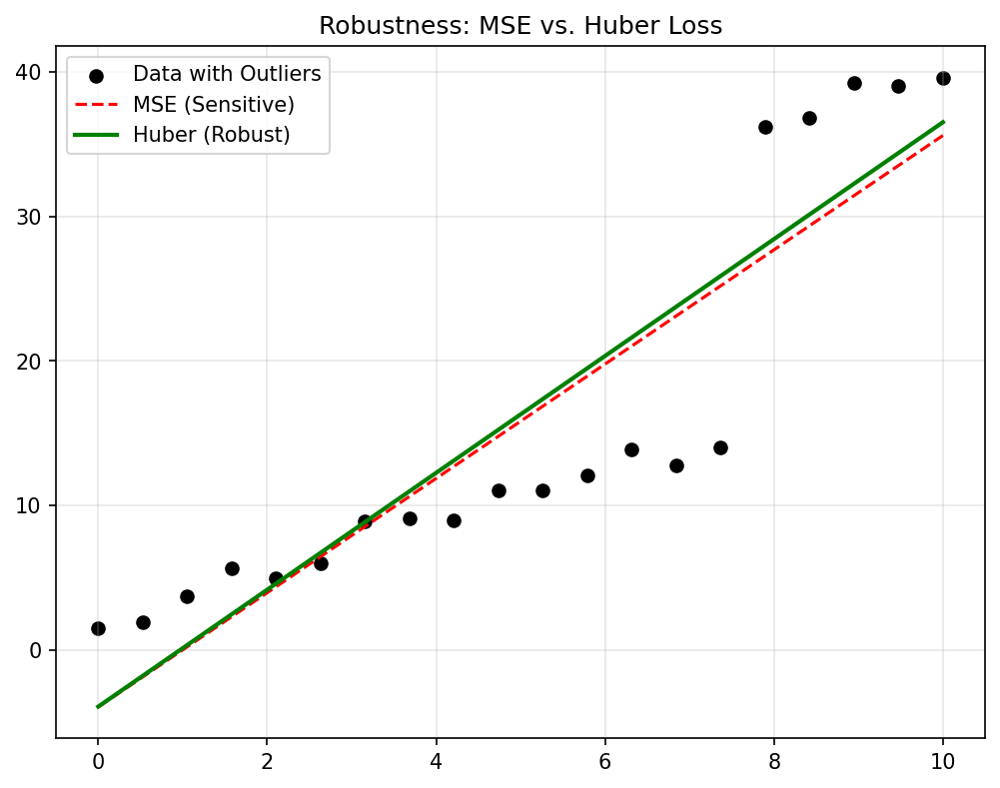
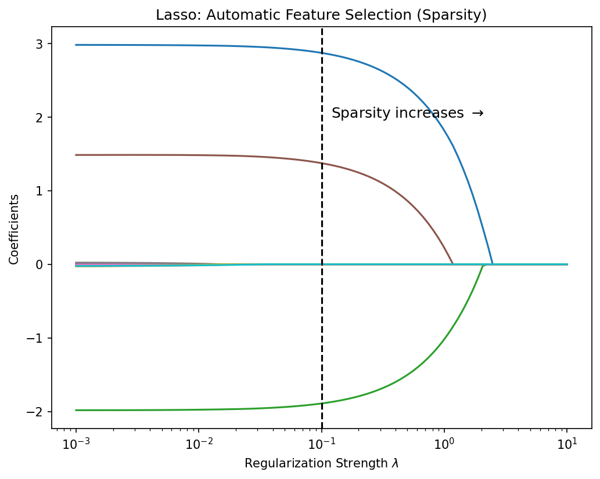

Mathematical Foundations of AI & ML
Unit 3: Regression and Classification as Loss Minimization
Prof. Dr. Philipp Pelz
FAU Erlangen-Nürnberg


Title: Regression and Classification as Loss Minimization
- The Learning Objective: Moving from static data analysis to predictive modeling.
- Unit Role: Establishing the “Supervised Learning” framework where models are trained by minimizing discrepancies.
- Scope: From simple Mean Squared Error to advanced regularization techniques.
Learning outcomes
By the end of this unit, students can:
- Formulate regression and classification as Empirical Risk Minimization problems.
- Explain the geometric and probabilistic meaning of MSE, MAE, and Cross-Entropy.
- Derive the Normal Equations and understand Gradient Descent update rules.
- Balance model complexity using L1/L2 regularization and the Bias-Variance tradeoff.
Recap from Unit 2
- Linear Projections: We saw that least-squares regression is a projection onto the column space of the feature matrix \(\mathbf{X}\).
- Matrix Calculus: We’ll use gradients of quadratic forms to find optimal parameters \(\mathbf{w}\).
- Geometry: Inner products define our similarity measures and similarity in feature space (Gram matrices).
Empirical risk minimization (ERM)
- The Goal: Minimize the expected loss on the data distribution.
- Problem: We don’t know the true distribution \(p(\mathbf{x}, y)\), only a finite sample \(\mathcal{D}\).
- Empirical Risk: \(R_{emp}(\mathbf{w}) = \frac{1}{N} \sum_{i=1}^N L(f_{\mathbf{w}}(\mathbf{x}_i), y_i)\).
- Learning is the numerical optimization of this surrogate objective.
Loss as decision proxy
- A Loss Function \(L(\hat{y}, y)\) quantifies the “cost” of being wrong.
- Different tasks require different penalties:
- Should we punish large errors quadratically?
- Should we be robust to outliers?
- Is a false positive more expensive than a false negative?
Regression losses overview
- Mean Squared Error (MSE): \(L = (\hat{y} - y)^2\).
- Mean Absolute Error (MAE): \(L = |\hat{y} - y|\).
- Huber Loss: A hybrid that is quadratic near zero and linear at the tails.
- Choice: Depends on the noise distribution in your engineering measurements (Neuer et al. 2024).
MSE geometry
- The Squared Penalty: MSE strongly punishes large residuals, forcing the model to prioritize fitting “extreme” points.
- Statistical Link: Minimizing MSE is equivalent to Maximum Likelihood Estimation (MLE) under the assumption of additive Gaussian noise \(\epsilon \sim \mathcal{N}(0, \sigma^2)\).
- Optimization: The surface is a smooth convex bowl (paraboloid), ideal for gradient descent.
MAE robustness
- The Linear Penalty: Errors are penalized proportionally to their magnitude.
- Robustness: MAE is less sensitive to outliers (e.g., faulty sensor readings) than MSE.
- Statistical Link: Equivalent to MLE under Laplacian noise assumptions.
- Caveat: The derivative is undefined at zero, requiring sub-gradient methods.
Huber compromise
- Best of Both Worlds:
- Quadratic behavior for small residuals (smooth optimization).
- Linear behavior for large residuals (robustness to outliers).
- Industrial Use: Ideal for materials process data where most data is clean but occasional “glitches” occur (Neuer et al. 2024).
Interactive: Regression Robustness
We have a dataset with a few points. Try dragging the red “outlier” point up and down.
Notice how: - MSE (Blue) is pulled strongly by the outlier to minimize the huge quadratic penalty. - MAE (Green) ignores the outlier completely, picking the median line. - Huber (Orange) compromises based on \(\delta\).
initialData1 = [
{id: 0, x: 1, y: 1, isOutlier: false},
{id: 1, x: 2, y: 2.2, isOutlier: false},
{id: 2, x: 3, y: 2.8, isOutlier: false},
{id: 3, x: 4, y: 4.1, isOutlier: false},
{id: 4, x: 5, y: 4.8, isOutlier: false},
{id: 5, x: 7, y: 10, isOutlier: true} // Initial outlier
]
mutable data1 = initialData1
// Regression helper functions
function fit_mse(pts) {
const n = pts.length;
let sumX = 0, sumY = 0, sumXY = 0, sumX2 = 0;
for (let p of pts) {
sumX += p.x; sumY += p.y;
sumXY += p.x * p.y; sumX2 += p.x * p.x;
}
const denominator = (n * sumX2 - sumX * sumX);
if (denominator === 0) return [0, sumY / n];
const m = (n * sumXY - sumX * sumY) / denominator;
const b = (sumY - m * sumX) / n;
return [m, b];
}
function fit_gd(pts, loss_grad_fn, lr=0.01, epochs=1000) {
let m = 1, b = 0;
const mse_p = fit_mse(pts);
m = mse_p[0]; b = mse_p[1];
for(let i=0; i<epochs; i++) {
let gm = 0, gb = 0;
for(let p of pts) {
let y_pred = m * p.x + b;
let err = y_pred - p.y;
let grad = loss_grad_fn(err);
gm += grad * p.x;
gb += grad;
}
m -= lr * (gm / pts.length);
b -= lr * (gb / pts.length);
}
return [m, b];
}
mae_grad = (err) => err > 0 ? 1 : (err < 0 ? -1 : 0)
huber_grad = (err, d=huber_delta) => Math.abs(err) <= d ? err : (err > 0 ? d : -d)
mse_params = fit_mse(data1)
mae_params = fit_gd(data1, mae_grad, 0.05, 1000)
huber_params = fit_gd(data1, (e) => huber_grad(e, huber_delta), 0.05, 1000)
chart1 = {
const width = 800;
const height = 500;
const margin = {top: 20, right: 30, bottom: 30, left: 40};
const x = d3.scaleLinear().domain([0, 8]).range([margin.left, width - margin.right]);
const y = d3.scaleLinear().domain([0, 12]).range([height - margin.bottom, margin.top]);
const svg = d3.create("svg")
.attr("viewBox", [0, 0, width, height])
.style("background", "none");
svg.append("g")
.attr("transform", `translate(0,${height - margin.bottom})`)
.call(d3.axisBottom(x))
.attr("color", "#ccc");
svg.append("g")
.attr("transform", `translate(${margin.left},0)`)
.call(d3.axisLeft(y))
.attr("color", "#ccc");
const drawLine = (params, color, dash="") => {
return svg.append("line")
.attr("x1", x(0))
.attr("y1", y(params[1]))
.attr("x2", x(8))
.attr("y2", y(params[0] * 8 + params[1]))
.attr("stroke", color)
.attr("stroke-width", 3)
.attr("stroke-dasharray", dash);
};
drawLine(mse_params, "#3498db");
drawLine(mae_params, "#2ecc71");
drawLine(huber_params, "#e67e22", "5,5");
const dragBehavior = d3.drag()
.on("drag", function(event, d) {
if(!d.isOutlier) return;
const newY = Math.max(0, Math.min(12, y.invert(event.y)));
mutable data1 = data1.map(p => {
if (p.id === d.id) return {...p, y: newY};
return p;
});
});
svg.append("g")
.selectAll("circle")
.data(data1)
.join("circle")
.attr("cx", d => x(d.x))
.attr("cy", d => y(d.y))
.attr("r", 8)
.attr("fill", d => d.isOutlier ? "#e74c3c" : "#ecf0f1")
.attr("stroke", d => d.isOutlier ? "#c0392b" : "#bdc3c7")
.attr("stroke-width", 2)
.attr("cursor", d => d.isOutlier ? "ns-resize" : "default")
.call(dragBehavior);
const legend = svg.append("g")
.attr("transform", `translate(${margin.left + 20}, ${margin.top + 10})`)
.attr("font-family", "sans-serif")
.attr("font-size", 16)
.attr("fill", "#ecf0f1");
legend.append("rect").attr("x", 0).attr("y", 0).attr("width", 15).attr("height", 3).attr("fill", "#3498db");
legend.append("text").attr("x", 25).attr("y", 5).text("MSE");
legend.append("rect").attr("x", 0).attr("y", 25).attr("width", 15).attr("height", 3).attr("fill", "#2ecc71");
legend.append("text").attr("x", 25).attr("y", 30).text("MAE");
legend.append("rect").attr("x", 0).attr("y", 50).attr("width", 15).attr("height", 3).attr("fill", "#e67e22");
legend.append("text").attr("x", 25).attr("y", 55).text("Huber");
return svg.node();
}Classification losses
- In classification, \(y\) is discrete (e.g., phase A vs phase B).
- 0-1 Loss: \(L = 1\) if \(\hat{y} \neq y\), \(0\) otherwise. Problem: Not differentiable.
- Surrogate Losses: Logistic loss, Hinge loss, and Cross-Entropy provide differentiable bowls for optimization.
Cross-entropy intuition
- Probabilistic Targets: We model \(p(y=1|\mathbf{x}) = \sigma(\mathbf{w}^T \mathbf{x})\).
- NLL: Minimizing Cross-Entropy is equivalent to minimizing the Negative Log-Likelihood of a Bernoulli (binary) or Categorical (multi-class) distribution.
- Meaning: It punishes confident-but-wrong predictions much more harshly than slightly-unsure ones (Bishop 2006).
Interactive: Cross-Entropy & Decision Boundary
Adjust the logistic regression model’s weights to classify the blue (\(y=1\)) and red (\(y=0\)) points.
viewof w1 = Inputs.range([-5, 5], {value: 1.5, step: 0.1, label: "Weight w₁"})
viewof w2 = Inputs.range([-5, 5], {value: 1.5, step: 0.1, label: "Weight w₂"})
viewof bias = Inputs.range([-15, 10], {value: -8, step: 0.2, label: "Bias b"})The background color shows predicted probability \(P(y=1|\mathbf{x}) = \sigma(w_1 x_1 + w_2 x_2 + b)\). Notice how strongly the loss explodes if you push a red point deep into the “confident blue” region!
chart4 = {
const width = 600;
const height = 500;
const margin = {top: 40, right: 30, bottom: 30, left: 40};
const x = d3.scaleLinear().domain([0, 10]).range([margin.left, width - margin.right]);
const y = d3.scaleLinear().domain([0, 10]).range([height - margin.bottom, margin.top]);
const svg = d3.create("svg")
.attr("viewBox", [0, 0, width, height])
.style("background", "none");
const pts = [
{x: 2, y: 3, c: 0}, {x: 3, y: 2, c: 0}, {x: 4, y: 4, c: 0},
{x: 2, y: 5, c: 0}, {x: 5, y: 2, c: 0}, {x: 3, y: 4, c: 0},
{x: 7, y: 8, c: 1}, {x: 8, y: 7, c: 1}, {x: 6, y: 9, c: 1},
{x: 8, y: 9, c: 1}, {x: 9, y: 6, c: 1}, {x: 7, y: 6, c: 1},
{x: 5, y: 6, c: 1}
];
const sigmoid = (z) => 1 / (1 + Math.exp(-z));
const res = 40;
const dx = 10 / res;
const dy = 10 / res;
const grid = [];
for(let i=0; i<res; i++) {
for(let j=0; j<res; j++) {
let gx = i * dx;
let gy = j * dy;
let p = sigmoid(w1 * gx + w2 * gy + bias);
grid.push({x: gx, y: gy, p: p});
}
}
svg.append("g")
.selectAll("rect")
.data(grid)
.join("rect")
.attr("x", d => x(d.x))
.attr("y", d => y(d.y + dy))
.attr("width", x(dx) - x(0) + 1)
.attr("height", y(0) - y(dy) + 1)
.attr("fill", d => d3.interpolateRdBu(1 - d.p))
.attr("opacity", 0.6);
svg.append("g")
.attr("transform", `translate(0,${height - margin.bottom})`)
.call(d3.axisBottom(x))
.attr("color", "#ecf0f1");
svg.append("g")
.attr("transform", `translate(${margin.left},0)`)
.call(d3.axisLeft(y))
.attr("color", "#ecf0f1");
if (Math.abs(w2) > 0.01) {
let x1 = 0, y1 = (-w1 * x1 - bias) / w2;
let x2 = 10, y2 = (-w1 * x2 - bias) / w2;
svg.append("line")
.attr("x1", x(x1)).attr("y1", y(y1))
.attr("x2", x(x2)).attr("y2", y(y2))
.attr("stroke", "#f1c40f")
.attr("stroke-width", 3)
.attr("stroke-dasharray", "5,5");
} else if (Math.abs(w1) > 0.01) {
let x1 = -bias / w1;
svg.append("line")
.attr("x1", x(x1)).attr("y1", y(0))
.attr("x2", x(x1)).attr("y2", y(10))
.attr("stroke", "#f1c40f")
.attr("stroke-width", 3)
.attr("stroke-dasharray", "5,5");
}
svg.append("g")
.selectAll("circle")
.data(pts)
.join("circle")
.attr("cx", d => x(d.x))
.attr("cy", d => y(d.y))
.attr("r", 8)
.attr("fill", d => d.c === 1 ? "#3498db" : "#e74c3c")
.attr("stroke", "#ecf0f1")
.attr("stroke-width", 2);
let ce_sum = 0;
for(let p of pts) {
let prob = sigmoid(w1 * p.x + w2 * p.y + bias);
prob = Math.max(1e-15, Math.min(1 - 1e-15, prob));
if (p.c === 1) ce_sum += -Math.log(prob);
else ce_sum += -Math.log(1 - prob);
}
let ce_loss = ce_sum / pts.length;
svg.append("rect")
.attr("x", width - margin.right - 250)
.attr("y", margin.top - 30)
.attr("width", 240)
.attr("height", 40)
.attr("fill", "rgba(44, 62, 80, 0.8)")
.attr("rx", 5);
svg.append("text")
.attr("x", width - margin.right - 240)
.attr("y", margin.top - 5)
.text(`Cross-Entropy Loss: ${ce_loss.toFixed(3)}`)
.attr("fill", "#ecf0f1")
.attr("font-size", 18)
.attr("font-weight", "bold")
.attr("font-family", "monospace");
return svg.node();
}Margin-based view
- The Goal: Not just to classify correctly, but to do so with a “cushion” (Margin).
- Hinge Loss: \(L = \max(0, 1 - y \hat{y})\). Used in Support Vector Machines (SVMs).
- Intuition: Stop trying to improve once the point is correctly classified and far enough from the boundary.
Proper scoring rules
- A loss function is Proper if the true distribution is the unique minimizer.
- Brier Score: MSE for probabilities.
- Log-Loss: (Cross-Entropy).
- Using proper rules ensures that our model’s predicted probabilities are calibrated (meaning they reflect actual frequencies).
Class imbalance handling
- The Problem: In materials discovery, “interesting” samples (e.g., superconductors) are much rarer than “dull” ones.
- Weighted Loss: \(L = \sum w_j L_j\). Assign higher weights to minority classes.
- Focal Loss: Down-weights “easy” examples so the model focuses on hard-to-classify samples.
Multi-label loss setup
- Independent: Treat as \(K\) separate binary classification problems.
- Coupled: Use structured outputs or hierarchical loss if labels are related (e.g., “Steel” must also be “Metal”).
- Engineering Context: Identifying multiple properties (conductivity, hardness, transparency) simultaneously.
Structured losses (light)
- Used when the output is a sequence, graph, or image.
- Connection: We’ll revisit this in Unit 12 when discussing Neural Network outputs for complex materials structures (McClarren 2021).
Overfitting reminder
- Low Loss \(\neq\) Good Model.
- A model with 1 million parameters can have zero loss on 100 data points but will fail on the 101st.
- The Gap: Generalization error = Test Loss - Train Loss.
Regularization motivation
- Occam’s Razor: Prefer the simplest explanation that fits the data (Sandfeld et al. 2024).
- Constraining Hypothesis Space: We penalize complex models (large weights) so the model is forced to focus on the strongest signals.
- Objective: \(J(\mathbf{w}) = \mathcal{L}(\mathbf{w}) + \lambda \Omega(\mathbf{w})\).
L2 regularization (Ridge)
- Penalty: \(\Omega(\mathbf{w}) = \frac{1}{2}\|\mathbf{w}\|_2^2\).
- Objective: \(J(\mathbf{w}) = \mathcal{L}(\mathbf{w}) + \lambda \frac{1}{2}\|\mathbf{w}\|_2^2\).
- Effect: Shrinks all weights smoothly toward zero.
- Geometry: The constraint is a hypersphere.
- Industrial Stability: Helps handle correlated features by spreading the “blame” across them.
Normal equations derivation
- Objective: Minimize \(\mathcal{L}(\mathbf{w}) = \frac{1}{2} \|\mathbf{y} - \mathbf{Xw}\|_2^2\)
- Gradient: \(\nabla_{\mathbf{w}} \mathcal{L} = -\mathbf{X}^T (\mathbf{y} - \mathbf{Xw})\)
- Optimality: Set \(\nabla_{\mathbf{w}} \mathcal{L} = \mathbf{0}\)
- Normal Equations: \(\mathbf{X}^T \mathbf{Xw} = \mathbf{X}^T \mathbf{y}\)
- Solve: \(\hat{\mathbf{w}} = (\mathbf{X}^T\mathbf{X})^{-1}\mathbf{X}^T\mathbf{y}\) (Bishop 2006)
L1 regularization (Lasso)
- Penalty: \(\Omega(\mathbf{w}) = \|\mathbf{w}\|_1\).
- Objective: \(J(\mathbf{w}) = \mathcal{L}(\mathbf{w}) + \lambda \|\mathbf{w}\|_1\).
- Effect: Promotes Sparsity. Many weights will be set to exactly zero.
- Geometry: The constraint is a hyper-diamond with sharp corners.
- Feature Selection: Effectively tells you which inputs are irrelevant for the task (Murphy 2012).
Interactive: Geometry of Regularization
The objective is to find where the contours of our loss function touch the constraint boundary of the regularization.
viewof reg_lambda = Inputs.range([0.1, 4], {value: 1.5, step: 0.1, label: "Radius (1/λ)"})
viewof reg_type = Inputs.radio(["L1 (Lasso)", "L2 (Ridge)"], {value: "L1 (Lasso)", label: "Penalty Type"})- L1 (Diamond): The sharp corners mean the loss contour often hits exactly on an axis (\(w_1=0\) or \(w_2=0\)), inducing sparsity (feature selection).
- L2 (Circle): The smooth boundary means the weights shrink together, but rarely to exactly zero.
chart2 = {
const width = 600;
const height = 500;
const margin = {top: 20, right: 30, bottom: 30, left: 40};
const x = d3.scaleLinear().domain([-4, 4]).range([margin.left, width - margin.right]);
const y = d3.scaleLinear().domain([-4, 4]).range([height - margin.bottom, margin.top]);
const svg = d3.create("svg")
.attr("viewBox", [0, 0, width, height])
.style("background", "none");
svg.append("g")
.attr("transform", `translate(0,${y(0)})`)
.call(d3.axisBottom(x).ticks(5))
.attr("color", "#7f8c8d");
svg.append("g")
.attr("transform", `translate(${x(0)},0)`)
.call(d3.axisLeft(y).ticks(5))
.attr("color", "#7f8c8d");
const cx = 2;
const cy = 2.5;
const a = 1;
const b = 0.5;
const angle = Math.PI / 4;
const loss_val = (w1, w2) => {
const dx = w1 - cx;
const dy = w2 - cy;
const u = dx * Math.cos(angle) + dy * Math.sin(angle);
const v = -dx * Math.sin(angle) + dy * Math.cos(angle);
return (u*u / a + v*v / b);
};
for (let c = 0.5; c <= 10; c+=1.2) {
const pts = [];
for(let t=0; t<Math.PI*2; t+=0.1) {
const u = Math.sqrt(c * a) * Math.cos(t);
const v = Math.sqrt(c * b) * Math.sin(t);
const dx = u * Math.cos(-angle) + v * Math.sin(-angle);
const dy = -u * Math.sin(-angle) + v * Math.cos(-angle);
pts.push([dx + cx, dy + cy]);
}
pts.push(pts[0]);
svg.append("path")
.datum(pts)
.attr("fill", "none")
.attr("stroke", d3.interpolateBlues(0.3 + c*0.05))
.attr("stroke-width", 1.5)
.attr("d", d3.line().x(d => x(d[0])).y(d => y(d[1])));
}
const r = reg_lambda;
if (reg_type === "L1 (Lasso)") {
const diamondPts = [[r, 0], [0, r], [-r, 0], [0, -r], [r, 0]];
svg.append("path")
.datum(diamondPts)
.attr("fill", "rgba(231, 76, 60, 0.2)")
.attr("stroke", "#e74c3c")
.attr("stroke-width", 3)
.attr("d", d3.line().x(d => x(d[0])).y(d => y(d[1])));
} else {
svg.append("circle")
.attr("cx", x(0))
.attr("cy", y(0))
.attr("r", Math.abs(x(r) - x(0)))
.attr("fill", "rgba(46, 204, 113, 0.2)")
.attr("stroke", "#2ecc71")
.attr("stroke-width", 3);
}
svg.append("circle").attr("cx", x(cx)).attr("cy", y(cy)).attr("r", 6).attr("fill", "#f39c12");
svg.append("text").attr("x", x(cx) + 12).attr("y", y(cy) - 6).text("w* (Unregularized)").attr("fill", "#ecf0f1").style("font-size", "14px");
let min_loss = Infinity;
let opt_w = [0, 0];
if (r > 0.05) {
if (reg_type === "L1 (Lasso)") {
for(let w1=-r; w1<=r; w1+=0.02) {
let pts = [[w1, r - Math.abs(w1)], [w1, -(r - Math.abs(w1))]];
for(let p of pts) {
const v = loss_val(p[0], p[1]);
if(v < min_loss) { min_loss = v; opt_w = p; }
}
}
} else {
for(let t=0; t<Math.PI*2; t+=0.02) {
const w1 = r * Math.cos(t);
const w2 = r * Math.sin(t);
const v = loss_val(w1, w2);
if(v < min_loss) { min_loss = v; opt_w = [w1, w2]; }
}
}
svg.append("circle").attr("cx", x(opt_w[0])).attr("cy", y(opt_w[1])).attr("r", 7).attr("fill", "#e74c3c");
svg.append("text").attr("x", x(opt_w[0]) + 12).attr("y", y(opt_w[1]) + 20).text("w* (Regularized)").attr("fill", "#e74c3c").style("font-size", "14px");
svg.append("defs").append("marker")
.attr("id", "arrow")
.attr("viewBox", "0 -5 10 10")
.attr("refX", 8)
.attr("refY", 0)
.attr("markerWidth", 5)
.attr("markerHeight", 5)
.attr("orient", "auto")
.append("path")
.attr("fill", "#e74c3c")
.attr("d", "M0,-5L10,0L0,5");
svg.append("line")
.attr("x1", x(0)).attr("y1", y(0))
.attr("x2", x(opt_w[0])).attr("y2", y(opt_w[1]))
.attr("stroke", "#e74c3c")
.attr("stroke-width", 2)
.attr("stroke-dasharray", "4,4")
.attr("marker-end", "url(#arrow)");
}
return svg.node();
}Elastic net
- The Tradeoff: \(\Omega = \alpha \|\mathbf{w}\|_1 + (1-\alpha) \frac{1}{2}\|\mathbf{w}\|_2^2\).
- Why?: Lasso can be unstable when features are highly correlated (it randomly picks one). Elastic Net groups them and keeps them together.
- Standard Tool: The default choice for high-dimensional materials regression.
MAP interpretation
- L2 Regularization \(\leftrightarrow\) Gaussian Prior on weights.
- L1 Regularization \(\leftrightarrow\) Laplace Prior on weights.
- Bayesian Perspective: We are injecting our prior belief that parameters should be small or sparse.
Early stopping
- Implicit Regularization: Monitor loss on a validation set. Stop training when validation loss starts to rise, even if training loss is still falling.
- Mechanism: Prevents the optimizer from exploring the “overfit” regions of the landscape.
Data augmentation as regularizer
- If you don’t have enough data, make some!
- Symmetry: Rotating an image or slightly perturbing a spectrum shouldn’t change the label.
- Effect: Artificially expands the dataset, effectively smoothing the loss landscape.
Dropout intuition
- Ensemble-in-a-Model: Randomly “kill” neurons during training.
- Why it works: Prevents neurons from relying too much on each other (co-adaptation). The network becomes more robust and generalized.
Batch norm side effects
- While primarily for optimization, Batch Norm adds a small amount of noise to each batch.
- This noise acts as a regularizer, often allowing us to use less Dropout or weight decay.
Label smoothing
- Instead of target \(y=1\), use \(y=0.9\).
- Prevents the network from becoming “overconfident” and pushing weights to infinity to satisfy the sigmoid/softmax saturation.
- Improves Calibration.
Noise injection methods
- Injecting Gaussian noise into inputs during training acts similarly to L2 regularization.
- Physical Interpretation: The model becomes robust to measurement error in the lab (Neuer et al. 2024).
Hyperparameter tuning
- \(\lambda\) (regularization strength) is not learned by gradient descent!
- Grid Search: Try discrete values.
- Random Search: Often better for high-dim spaces.
- Bayesian Optimization: Use a model to predict which \(\lambda\) will work best.
Validation-driven model selection
- Golden Rule: Never use the Test Set for tuning hyperparameters.
- Process:
- Train on Train Set.
- Evaluate on Validation Set to pick the best \(\lambda\).
- report final performance on the unseen Test Set.
Bias-variance framing
- High Bias: Model is too simple (Underfitting).
- High Variance: Model is too sensitive to noise (Overfitting).
- The Sweet Spot: Where total error (Bias\(^2\) + Variance + Noise) is minimized.
graph TD
Complexity[Model Complexity]
Error[Total Error]
Bias["Bias²"]
Var[Variance]
Complexity --- Bias
Complexity --- Var
Bias --- Error
Var --- Error
style Bias fill:#f9f,stroke:#333
style Var fill:#ccf,stroke:#333
style Error fill:#f96,stroke:#333graph TD
Complexity[Model Complexity]
Error[Total Error]
Bias["Bias²"]
Var[Variance]
Complexity --- Bias
Complexity --- Var
Bias --- Error
Var --- Error
style Bias fill:#f9f,stroke:#333
style Var fill:#ccf,stroke:#333
style Error fill:#f96,stroke:#333
Underfit vs overfit diagnostics
- Learning Curves: Plot Error vs Training Set Size.
- Validation Curves: Plot Error vs Model Complexity.
- If Train and Val error are both high \(\to\) Underfit.
- If Train is low but Val is high \(\to\) Overfit.
Interactive: Polynomial Fitting & Overfitting
Let’s fit a polynomial to noisy training data to see the Bias-Variance tradeoff live.
- Degree 1-2: Underfitting (High Bias). The model is too simple to capture the intrinsic curve.
- Degree 3-4: The “Sweet Spot”. Fits the true curve well.
- Degree 9-10: Overfitting (High Variance). The model memorizes the noise, leading to wild oscillations between data points. Test error explodes!
chart3 = {
const width = 800;
const height = 500;
const margin = {top: 20, right: 30, bottom: 40, left: 50};
const ground_truth = (x) => Math.sin(1.5 * Math.PI * x);
const raw_x = [0.02, 0.05, 0.1, 0.15, 0.22, 0.28, 0.35, 0.40, 0.45, 0.52, 0.58, 0.65, 0.70, 0.78, 0.85, 0.90, 0.95, 0.98];
const train_data = raw_x.map(x => ({
x: x,
y: ground_truth(x) + (Math.sin(x * 1234) * 0.25)
}));
const test_x = [0.01, 0.08, 0.12, 0.2, 0.25, 0.3, 0.38, 0.42, 0.48, 0.55, 0.6, 0.68, 0.75, 0.8, 0.88, 0.92, 0.96, 0.99];
const test_data = test_x.map(x => ({
x: x,
y: ground_truth(x) + (Math.sin(x * 4321) * 0.25)
}));
const svg = d3.create("svg")
.attr("viewBox", [0, 0, width, height])
.style("background", "none");
const leftWidth = width * 0.55;
const rightWidth = width * 0.45;
const xLeft = d3.scaleLinear().domain([0, 1]).range([margin.left, leftWidth - margin.right/2]);
const yLeft = d3.scaleLinear().domain([-1.8, 1.8]).range([height - margin.bottom, margin.top]);
svg.append("g")
.attr("transform", `translate(0,${yLeft(0)})`)
.call(d3.axisBottom(xLeft).ticks(5))
.attr("color", "#7f8c8d");
svg.append("g")
.attr("transform", `translate(${margin.left},0)`)
.call(d3.axisLeft(yLeft).ticks(5))
.attr("color", "#7f8c8d");
const truth_pts = [];
for(let x=0; x<=1; x+=0.01) truth_pts.push([x, ground_truth(x)]);
svg.append("path")
.datum(truth_pts)
.attr("fill", "none")
.attr("stroke", "#7f8c8d")
.attr("stroke-width", 2)
.attr("stroke-dasharray", "5,5")
.attr("d", d3.line().x(d => xLeft(d[0])).y(d => yLeft(d[1])));
const fit_poly = (data, degree) => {
const X = data.map(d => {
let row = [];
for(let j=0; j<=degree; j++) row.push(Math.pow(d.x, j));
return row;
});
const Y = data.map(d => d.y);
const XT = [];
for(let j=0; j<=degree; j++) {
let row = [];
for(let i=0; i<data.length; i++) row.push(X[i][j]);
XT.push(row);
}
const XTX = [];
for(let i=0; i<=degree; i++) {
let row = [];
for(let j=0; j<=degree; j++) {
let sum = 0;
for(let k=0; k<data.length; k++) sum += XT[i][k] * X[k][j];
row.push(sum);
}
XTX.push(row);
}
const XTY = [];
for(let i=0; i<=degree; i++) {
let sum = 0;
for(let k=0; k<data.length; k++) sum += XT[i][k] * Y[k];
XTY.push(sum);
}
for(let i=0; i<=degree; i++) {
let max_el = Math.abs(XTX[i][i]);
let max_row = i;
for(let k=i+1; k<=degree; k++) {
if (Math.abs(XTX[k][i]) > max_el) {
max_el = Math.abs(XTX[k][i]);
max_row = k;
}
}
let tmp = XTX[i]; XTX[i] = XTX[max_row]; XTX[max_row] = tmp;
let tmpY = XTY[i]; XTY[i] = XTY[max_row]; XTY[max_row] = tmpY;
for (let k=i+1; k<=degree; k++) {
let c = -XTX[k][i] / XTX[i][i];
for(let j=i; j<=degree; j++) {
if(i===j) XTX[k][j] = 0;
else XTX[k][j] += c * XTX[i][j];
}
XTY[k] += c * XTY[i];
}
}
let w = new Array(degree+1).fill(0);
for(let i=degree; i>=0; i--) {
if(Math.abs(XTX[i][i]) < 1e-12) { w[i] = 0; continue; }
w[i] = XTY[i] / XTX[i][i];
for(let k=i-1; k>=0; k--) {
XTY[k] -= XTX[k][i] * w[i];
}
}
return w;
};
const predict = (x, weights) => {
let sum = 0;
for(let j=0; j<weights.length; j++) sum += weights[j] * Math.pow(x, j);
return sum;
};
const calc_mse = (data, weights) => {
let sum = 0;
for(let d of data) {
let err = d.y - predict(d.x, weights);
sum += err * err;
}
return sum / data.length;
};
const weights = fit_poly(train_data, poly_degree);
const fit_pts = [];
for(let x=0; x<=1; x+=0.01) {
let y = predict(x, weights);
// clip wild oscillations to bounding box visually
if(y > 2) y = 2; if(y < -2) y = -2;
fit_pts.push([x, y]);
}
svg.append("path")
.datum(fit_pts)
.attr("fill", "none")
.attr("stroke", "#e74c3c")
.attr("stroke-width", 3)
.attr("d", d3.line().x(d => xLeft(d[0])).y(d => yLeft(d[1])));
svg.append("g")
.selectAll("circle")
.data(train_data)
.join("circle")
.attr("cx", d => xLeft(d.x))
.attr("cy", d => yLeft(d.y))
.attr("r", 5)
.attr("fill", "#3498db")
.attr("stroke", "#2980b9");
const xRight = d3.scaleLinear().domain([1, 10]).range([leftWidth + margin.left, width - margin.right]);
const yRight = d3.scaleLog().domain([0.01, 100]).range([height - margin.bottom, margin.top]);
svg.append("g")
.attr("transform", `translate(0,${height - margin.bottom})`)
.call(d3.axisBottom(xRight).ticks(5))
.attr("color", "#7f8c8d");
svg.append("g")
.attr("transform", `translate(${leftWidth + margin.left},0)`)
.call(d3.axisLeft(yRight).ticks(4).tickFormat(d => d))
.attr("color", "#7f8c8d");
const train_errs = [];
const test_errs = [];
for(let d=1; d<=poly_degree; d++) {
let w = fit_poly(train_data, d);
train_errs.push([d, Math.max(0.01, Math.min(100, calc_mse(train_data, w)))]);
test_errs.push([d, Math.max(0.01, Math.min(100, calc_mse(test_data, w)))]);
}
svg.append("path")
.datum(train_errs)
.attr("fill", "none")
.attr("stroke", "#3498db")
.attr("stroke-width", 2)
.attr("d", d3.line().x(d => xRight(d[0])).y(d => yRight(d[1])));
svg.append("g")
.selectAll("circle.train")
.data(train_errs)
.join("circle")
.attr("class", "train")
.attr("cx", d => xRight(d[0]))
.attr("cy", d => yRight(d[1]))
.attr("r", 4)
.attr("fill", "#3498db");
svg.append("path")
.datum(test_errs)
.attr("fill", "none")
.attr("stroke", "#e67e22")
.attr("stroke-width", 2)
.attr("d", d3.line().x(d => xRight(d[0])).y(d => yRight(d[1])));
svg.append("g")
.selectAll("circle.test")
.data(test_errs)
.join("circle")
.attr("class", "test")
.attr("cx", d => xRight(d[0]))
.attr("cy", d => yRight(d[1]))
.attr("r", 4)
.attr("fill", "#e67e22");
svg.append("text").attr("x", margin.left + 10).attr("y", margin.top).text("Training Data").attr("fill", "#3498db").attr("font-size", 14);
svg.append("text").attr("x", margin.left + 10).attr("y", margin.top + 20).text("True Function").attr("fill", "#7f8c8d").attr("font-size", 14);
svg.append("text").attr("x", margin.left + 10).attr("y", margin.top + 40).text("Model Fit").attr("fill", "#e74c3c").attr("font-size", 14);
svg.append("text").attr("x", leftWidth + margin.left + 10).attr("y", margin.top).text("Train Error").attr("fill", "#3498db").attr("font-size", 14);
svg.append("text").attr("x", leftWidth + margin.left + 10).attr("y", margin.top + 20).text("Test Error").attr("fill", "#e67e22").attr("font-size", 14);
return svg.node();
}Double descent hint
- Modern Paradox: In deep learning, increasing complexity beyond the “interpolation threshold” can actually decrease test error again.
- We will revisit this in the Neural Networks units!
Robust optimization preview
- Instead of minimizing average loss, minimize the worst-case loss under small perturbations.
- Security: Crucial for defending against adversarial attacks or unexpected process shifts.
Loss landscape intuition
- Curvature: The Hessian \(\mathbf{H}\) determines how fast we can learn.
- Conditioning: If the “bowl” is a very long, thin trench, gradient descent will oscillate wildly.
- Solution: Regularization and Feature Scaling.
Optimization interaction
- MSE: Quadratic gradient, easy to optimize.
- MAE: Constant gradient, “jumps” around the minimum.
- Cross-Entropy: Can have very flat regions (vanishing gradients) if initialized poorly.
Calibration and loss choice
- Margin losses (like Hinge) focus only on the boundary.
- Log-losses (like Cross-Entropy) focus on the entire distribution.
- For high-stakes engineering (e.g., “Is this bridge going to fail?”), we need probabilities, not just labels.
Domain-specific loss design
- Physics-Informed Losses: Add a term that penalizes violations of physical laws (e.g., mass conservation, energy balance).
- \(J = J_{data} + \lambda J_{physics}\).
- This acts as the ultimate regularizer for scientific ML (Neuer et al. 2024).
Materials example: rare defect cost
- Task: Identifying micro-cracks from ultrasound.
- Asymmetry: Missing a crack (False Negative) is 100x more expensive than a false alarm (False Positive).
- Solution: Cost-sensitive weighted loss function.

Materials example: smooth property regression
- Task: Predicting conductivity from composition.
- Data contains outliers due to experimental errors.
- Solution: Use Huber loss to stay robust to outliers while maintaining smooth convergence.

Materials example: sparse feature model
- Task: Predicting melting point from 10,000 potential atomic descriptors.
- Most descriptors are irrelevant.
- Solution: Lasso (\(L_1\)) regression to find the “active” physical descriptors.

Common pitfalls
Checklist for loss selection
- Is the target continuous or discrete?
- Are there outliers in the data?
- Is the class distribution imbalanced?
- Do I need calibrated probabilities or just labels?
- Are there physical constraints to satisfy?
Exercise 1 scaffold: Loss Comparison
- Implement a custom loss function in NumPy.
- Compare the fit of a line using MSE, MAE, and Huber on a dataset with synthetic outliers.
- Visualize the resulting regression lines.
Exercise 2 scaffold: Regularization Sweep
- Fit a high-degree polynomial to limited data points.
- Perform a sweep over \(\lambda\) for both Ridge and Lasso.
- Plot the weight magnitudes and count the number of zero-weights for Lasso.
Exercise 3 scaffold: Imbalanced Classification
- Train a logistic regression model on a 99% vs 1% class split.
- Observe the failure of standard accuracy.
- Implement a weighted loss and compare the resulting confusion matrices.
Exam-oriented key statements
- ERM is the core principle of training.
- MSE is MLE under Gaussian noise.
- L1 induces sparsity; L2 shrinks weights smoothly.
- Bias-Variance tradeoff governs generalization.
- Cross-Entropy is the standard for calibrated classification.
Summary table
| Loss | Best for… | Property |
|---|---|---|
| MSE | Gaussian Noise | Smooth, Sensitive to Outliers |
| MAE | Laplacian Noise | Robust, Non-differentiable at 0 |
| Huber | Industrial Data | Hybrid, Robust + Smooth |
| Log-Loss | Probabilities | Calibrated, Strongly Convex |
Unit summary
- We’ve moved from linear algebra to Learning.
- We understand that every modeling choice (loss, penalty, prior) has both a geometric and a statistical justification.
- Generalization is the only metric that truly matters.
References + transition
- Read: Neuer Ch. 4.1-4.3, Bishop Ch. 3.1-3.2.
- Next Unit: Neural Networks Early - from linear combinations to deep hierarchies.
Bishop, Christopher M. 2006. Pattern Recognition and Machine Learning. Springer.
McClarren, Ryan G. 2021. Machine Learning for Engineers: Using Data to Solve Problems for Physical Systems. Springer.
Murphy, Kevin P. 2012. Machine Learning: A Probabilistic Perspective. MIT Press.
Neuer, Michael et al. 2024. Machine Learning for Engineers: Introduction to Physics-Informed, Explainable Learning Methods for AI in Engineering Applications. Springer Nature.
Sandfeld, Stefan et al. 2024. Materials Data Science. Springer.
Example Notebook
Week 3: Regression from Scratch — TensileTestDataset

© Philipp Pelz - Mathematical Foundations of AI & ML